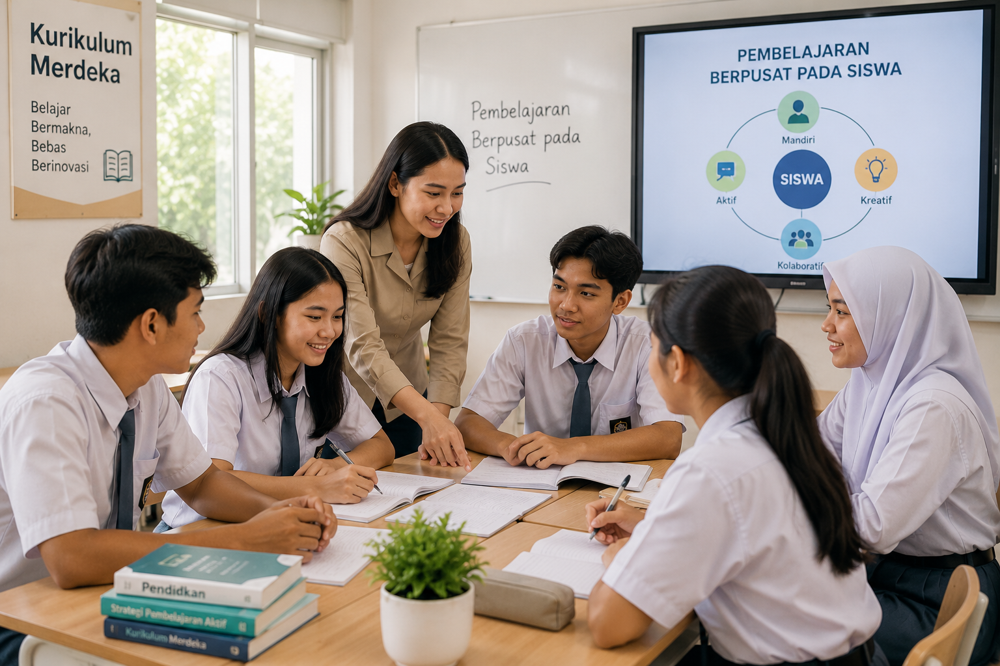

Kurikulum Merdeka dan Pembelajaran yang Berpusat pada Siswa
Ditulis oleh Admin EduNews | 3 Juli 2026
Pendidikan merupakan salah satu faktor utama dalam membentuk generasi yang berkualitas dan mampu menghadapi berbagai tantangan di masa depan. Seiring dengan perkembangan zaman, sistem pendidikan di Indonesia terus mengalami pembaruan agar dapat memenuhi kebutuhan peserta didik. Salah satu inovasi yang diterapkan adalah Kurikulum Merdeka, yaitu kurikulum yang memberikan keleluasaan kepada satuan pendidikan, guru, dan peserta didik dalam melaksanakan proses pembelajaran yang lebih fleksibel, bermakna, dan sesuai dengan kebutuhan serta potensi masing-masing.
Kurikulum Merdeka hadir sebagai upaya meningkatkan kualitas pendidikan melalui pembelajaran yang berpusat pada peserta didik (student-centered learning). Dalam kurikulum ini, peserta didik tidak hanya dituntut menguasai materi pelajaran, tetapi juga didorong untuk mengembangkan kemampuan berpikir kritis, kreatif, mampu bekerja sama, berkomunikasi dengan baik, serta memiliki karakter yang kuat. Dengan demikian, proses belajar tidak hanya berorientasi pada nilai akademik, tetapi juga pada pengembangan kompetensi dan kepribadian.
Salah satu ciri utama Kurikulum Merdeka adalah pembelajaran yang lebih sederhana dan mendalam. Materi pembelajaran difokuskan pada kompetensi esensial sehingga peserta didik memiliki waktu yang cukup untuk memahami konsep secara utuh. Guru tidak lagi terburu-buru menyelesaikan seluruh materi, melainkan dapat menyesuaikan strategi pembelajaran sesuai dengan kemampuan dan kebutuhan peserta didik. Pendekatan ini diharapkan mampu menciptakan pengalaman belajar yang lebih menyenangkan dan bermakna.
Selain itu, Kurikulum Merdeka memberikan kebebasan kepada guru untuk memilih metode, media, dan perangkat pembelajaran yang sesuai dengan kondisi kelas. Guru berperan sebagai fasilitator yang membimbing peserta didik dalam menemukan pengetahuan melalui berbagai aktivitas pembelajaran, seperti diskusi, eksperimen, observasi, proyek, maupun pemecahan masalah. Dengan cara tersebut, peserta didik menjadi lebih aktif dalam proses belajar dan memiliki kesempatan untuk mengembangkan potensi yang dimiliki.
Salah satu komponen penting dalam Kurikulum Merdeka adalah Projek Penguatan Profil Pelajar Pancasila (P5). Melalui kegiatan proyek, peserta didik diajak untuk mempelajari berbagai isu yang dekat dengan kehidupan sehari-hari, seperti pelestarian lingkungan, kewirausahaan, kesehatan, budaya lokal, hingga pemanfaatan teknologi. Kegiatan ini bertujuan membentuk peserta didik yang beriman dan bertakwa kepada Tuhan Yang Maha Esa, berkebinekaan global, mandiri, bergotong royong, bernalar kritis, serta kreatif sesuai dengan nilai-nilai Profil Pelajar Pancasila.
Penerapan Kurikulum Merdeka juga memberikan manfaat bagi peserta didik karena pembelajaran menjadi lebih sesuai dengan minat, bakat, dan kemampuan masing-masing. Peserta didik memiliki kesempatan untuk mengeksplorasi potensi diri melalui berbagai kegiatan yang mendorong kreativitas dan inovasi. Sementara itu, guru dapat lebih mudah melakukan pembelajaran berdiferensiasi, yaitu menyesuaikan proses pembelajaran berdasarkan kebutuhan belajar peserta didik yang beragam.
Meskipun memiliki banyak keunggulan, penerapan Kurikulum Merdeka juga menghadapi beberapa tantangan. Guru perlu terus meningkatkan kompetensi dalam merancang pembelajaran yang kreatif dan inovatif. Selain itu, sekolah perlu menyediakan sarana dan prasarana yang mendukung pelaksanaan pembelajaran berbasis proyek serta memanfaatkan teknologi secara optimal. Dukungan dari orang tua juga sangat diperlukan agar proses pembelajaran dapat berjalan secara maksimal, baik di sekolah maupun di rumah.
Pada akhirnya, Kurikulum Merdeka merupakan langkah penting dalam menciptakan pendidikan yang lebih adaptif terhadap perkembangan zaman. Dengan memberikan ruang bagi peserta didik untuk belajar sesuai dengan potensi dan karakteristiknya, kurikulum ini diharapkan mampu menghasilkan generasi yang tidak hanya unggul dalam bidang akademik, tetapi juga memiliki karakter yang kuat, mampu berpikir kritis, kreatif, serta siap menghadapi tantangan global. Keberhasilan Kurikulum Merdeka tentunya memerlukan kerja sama antara pemerintah, sekolah, guru, orang tua, dan seluruh masyarakat demi mewujudkan pendidikan Indonesia yang lebih berkualitas.